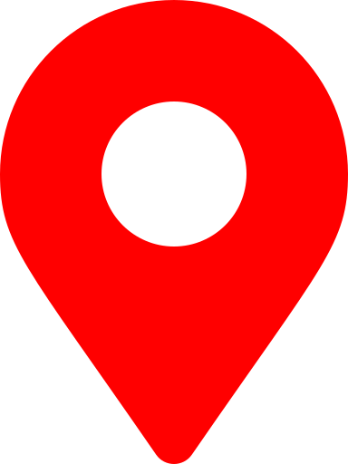
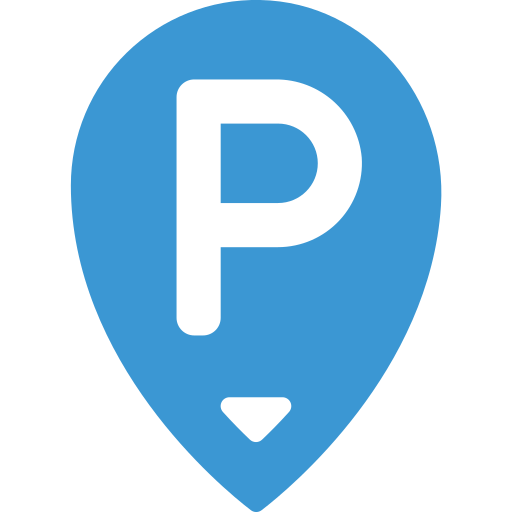

Les points d'intèrêts à Nancy

Votre position
Stations vélib

Parking Véhicules
base de données
Liste des parkings
Liste des vélos
Les API utilisés
La map
Géolocalisation IP
Stations Vélib
Géoservices Parking Nancy